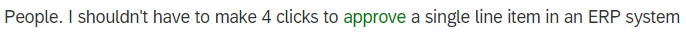

Many companies have a large pool of unstructured feedback from customers (e.g. complaints).
Most of the time, this data also has geographical information attached (e.g. the address).
Using HANA, we can easily extract value from all of this data, helping customers improve their services.
We'll look into some Twitter posts about #SAP and analyse the feedback SAP is receiving.
Initially, I wanted to use the Twitter API to pull a large amount of tweets and directly feed them to HANA.
Unfortunately, almost all of the tweets about SAP are: job postings, random advertisements and sharing blog posts or articles about something related.
The solution: I had to cherry-pick the tweets. In a real-life scenario though, this problem would be solved through the feedback collection mechanism.
Twitter can also have data about either the location from which the tweet was made (preferred) or the location of the author (fallback).
We need to define a simple data model for storing the raw data. For that, we can build a CDS context:
namespace spet.data;
@Schema: 'SPET'
context core {
entity Raw {
text: String(512) not null;
address: String(128) not null;
};
}
Now we need to fill our table with the Excel data. There are a lot of options to get data into HANA.
For purely development purposes, you can:
For productive usage, some of the options include:
In the end, I used a simple HDB table import:
import = [
{
cdstable = "spet.data::core.Raw";
schema = "SPET";
file = "spet.data:tweets.csv";
header = false;
delimField = ",";
delimEnclosing="\"";
}
];
Our geographical data is textual, but we would want to work with coordinates. The transformation between text and coordinates is called geocoding.
We could use the GEOCODING INDEX capability to automatically process the data when we insert it into our table, but it has one big drawback: we would need to split the address into components (country, etc.).
I used the Google Geocoding API instead, because of its increased flexibility. With some easy JavaScript, we can process all of our data at once.
We want to see how users feel about our products.
For this, HANA has the built-in functionality of Text Analysis, with a configuration specialized for processing customer feedback.
Again, we could use a dedicated index, the FULL TEXT INDEX, for analysing data as it is inserted.
But we also have an JavaScript API for doing this. As we already go through all the data for geocoding, we simultaneously extract the sentiments.
Each sentiment has the following attributes:
You may wonder how good the extraction results are. Let's look at some examples of good and bad results.
GOOD
It understands emoticons:
GOOD
It found a good rating and interpreted it correctly:
BAD
It interpreted a sarcastic emoticon as positive:
BAD
It doesn't understand the surrounding context:
BAD
Several tweets with obvious sentiments are ignored:
Now that we have all our data analysed and into a decent structure, let's visualize it.
First we want to generate a score for each tweet, on a scale from 1 to 5, where 1 is bad and 5 is good. We compute this score from the sentiments.
One other interesting point to analyse is to find hotspots where feedback (or a particular type of feedback) is coming from.
To do this, we can use HANA's built-in clustering feature or we can use the Google Maps version of the same thing directly on the UI.
Another idea is to find the average score for any arbitrarily defined geographical boundary.
For the fun of it, we will simply allow the user to draw a polygon to define this boundary.